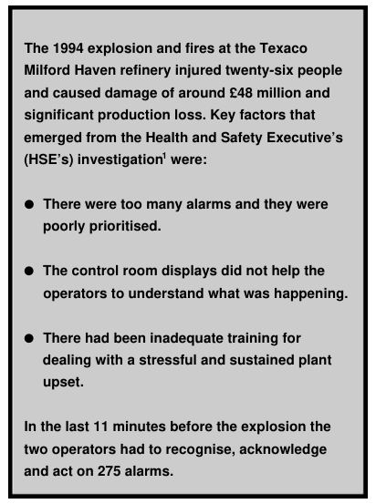
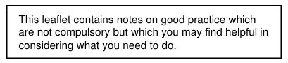

The original, as published: Health and Safety Executive, Better alarm handling (CHIS6). Open Government Licence v3.0, https://www.nationalarchives.gov.uk/doc/open-government-licence/version/3/. Imported as published, from https://www.hse.gov.uk/pubns/chis6.pdf https://www.hse.gov.uk/pubns/chis6.pdf

In the last 11 minutes before the explosion the two operators had to recognise, acknowledge and act on 275 alarms.
Who should read this guidance and why
This information sheet gives simple and practical guidance to managers, supervisors and operators on how to recognise and deal with typical human-factor problems involving alarm systems in the chemical and allied industries. It aims to prevent future accidents similar to the one at the Texaco refinery. Further practical guidance is given in the Engineering Equipment
Manufacturers and Users Association (EEMUA) guide,2 that HSE contributed to and recommends.
Approach
Here is a step-by-step approach for improving alarm handling; as with managing any other risk: firstly, identify any problems; secondly, plan what to do; and thirdly, eliminate or control them.
STEP 1: FIND OUT IF YOU HAVE A PROBLEM
Are there problems with the existing alarm system?
Take some measurements to find out:
Alarm rate targets: the long-term average alarm rate during normal operation should be no more than one every ten minutes; and no more than ten displayed in the first ten minutes following a major plant upset
(see page 37, EEMUA guide2).
Ask operators and safety representatives about their experiences:
For effective alarm prioritisation:
EEMUA guide.2)
Ask managers about alarm issues, eg:
How are new alarms added and existing ones modified?
Is there a structured process for this? For example there is a tendency for hazard and operability studies (HAZOPs) to generate actions which result in a lot of ‘quick fix’ alarms being installed.
Operator Reliability
High operator reliability requires:
Can you demonstrate you have achieved this level of reliability, eg in safety reports and risk assessments, do you make unreasonable claims for the likelihood of operators responding correctly to alarms?
Is the alarm system designed to a standard that takes human limitations into account?
An effective alarm system should ‘direct the operator’s attention towards plant conditions requiring timely assessment or action’ (see page 4, EEMUA guide); and so should:
Form a team to progress the issues:
The team should include the right technical, operational and safety representatives. Relate identified problems back to the overall plant risk assessments. Decide which ones present the biggest risks, and produce a timed action plan to deal with them. Identify and agree the necessary resources but be careful not to underestimate the effort involved. A quick first-pass review may cover perhaps 50 alarms per shift but a thorough review and redesign may take more than 1 shift per alarm.
One company reviewed their alarm system after the Texaco incident and found it had poorly prioritised and designed alarms resulting in high alarm rates. They set up a project to review existing systems. It was run by a steering committee with a senior management ‘champion’. A multidisciplinary team, including operators, carried out the work.
They identified best practice and rolled out an action programme to:
The steering committee continued to review progress and strategy.
Implement some quick and relatively easy technical solutions that can provide immediate benefits for operators:
The EEMUA guide (page 43) gives examples including:
Establish operating team competency:
Well-designed simulators and simulator training can be very e f fe c t ive if properly integrated into the training program m e. Ensure that training is sufficiently realistic for both norma l and abnormal conditions.
Provide operators with sufficient help and support to respond effectively to alarms:
Improving alarm handling is not a one-off project. You now need to manage it in a systematic way as part of your normal safety or quality assurance management system to maintain control and ownership. For example:
Draw up a site/company alarm strategy and standard. The strategy should include a clear definition and purpose for all site alarms, a commitment to suitable training and reviews, and to ergonomic design. The standard should include a mechanism for regular review and alarm change-control, definitions of responsibilities, operator training requirements, etc.
Checking: This includes formal audits and reviews, consultation with safety representatives, informal feedback from operators and supervisors. For example, the original measurements already carried out (see Step 1) can be repeated to measure progress and to see if performance is now reasonable. The alarm steering committee (or its equivalent) has an ongoing role in this process.
Design of new alarm systems: Much of what we have written here is about improving an existing alarm system. It is better to design the alarm system right in the first place. Your alarm standard should be used to set suitable specifications for purchasing alarm system equipment.
References
Conclusion
1 The explosion and fires at the Texaco Refinery, Milford Haven, 24 July 1994: A report of the investigation by the Health and Safety Executive into the explosion and fires on the Pembroke Cracking Company Plant at the Texaco Refinery, Milford Haven on 24 July 1994 HSE Books 1997 ISBN 0 7176 1413 1
Better alarm handling can have a significant effect on the safety of your business (the cost of not improving alarm handling can literally be your business in some cases). An improved alarm system can bring tighter quality control, improved fault diagnosis and more effective plant management by operators. A number of quick and relatively easy technical solutions are available which can bring immediate benefits. Medium and longer-term programmes can bring greater benefits still.
2 Alarm systems, a guide to design, management and procurement No. 191 Engineering Equipment and M a t e rials Users Association 1999 ISBN 0 8593 1076 0 (Available from EEMUA tel. 020 7628 7878)
Further reading
Reducing error and influencing behaviour HSG48 HSE Books 1999 ISBN 0 7176 2452 8
Bransby M L and Jenkinson J The management of alarm systems CRR 166 HSE Books 1998 ISBN 0 7176 1515 4
While every effo rt has been made to ensure the accurac y of the references listed in this publication, their future availability cannot be guaran t e e d .
H S E priced and free publications are availa ble by mail order from HSE Bo o k s, PO Box 1999, Sudbury, Suffolk , CO10 2WA Tel: 01787 881165 Fax: 01787 313995.
HSE priced publications are also availa ble from good b o o k s e lle r s.
For other enquiries ring HSE’s InfoLine Tel: 08701 545500, or write to HSE’s Information Centre, Broad Lane, Sheffield S3 7HQ.
HSE home page on the World Wide Web : h t t p : //w w w. h s e. g ov.u k
This guidance was produced by the Human Factors Team in the Central Division of HSE’s Hazardous Installation Directorate (HID). For further information or if you have any comments on this guidance, please contact: Dr Debbie Lucas, HID, HSE, St Annes House, Bootle, Merseyside L20 3RA Tel 0151 951 4363

This publication may be freely reproduced except for a d ve rtising, endorsement or commercial purpo s e s. The in fo rmation it contains is current at 3/00. Please a ck n owledge the source as HSE.